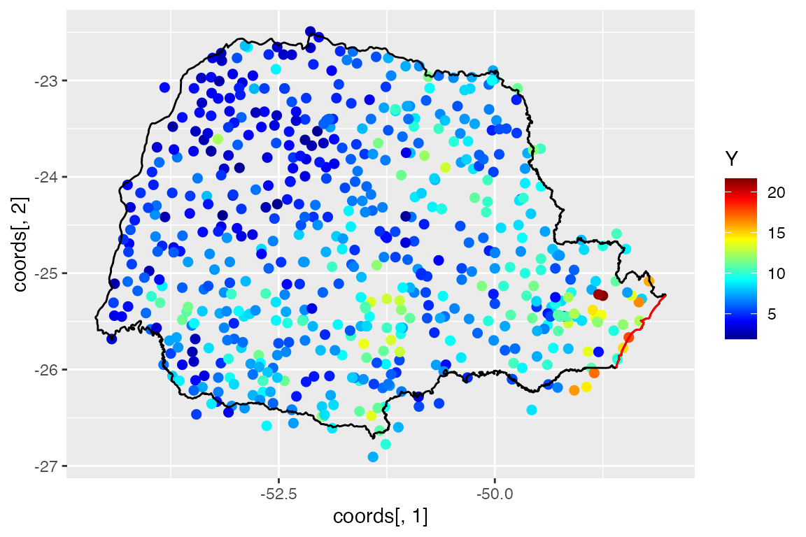
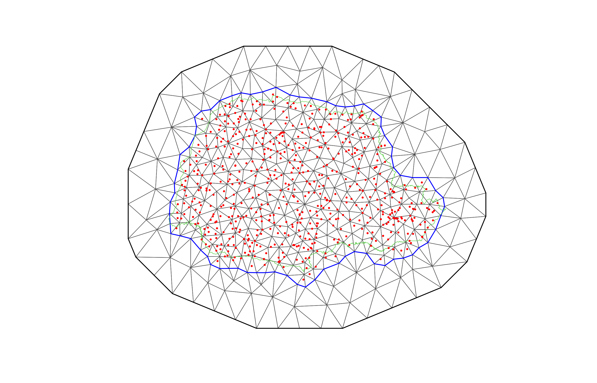

vignettes/rspde_inla.Rmd
rspde_inla.RmdIn this vignette we will illustrate how to do statistical inference with the covariance-based rational SPDE approach. The covariance-based rational approximation is related to the rational approximation by Bolin and Kirchner (2020).
We will consider a real world data set measuring one month precipitation from the Paraná region in Brazil. We will also provide a step-by-step illustration on how to use our implementation of the covariance-based rational approximation to the R-INLA package.
It is important to mention that one can improve the performance by using the PARDISO solver. Please, go to (https://www.pardiso-project.org/r-inla/#license) to apply for a license. Also, use inla.pardiso() for instructions on how to enable the PARDISO sparse library.
Let us first discuss the basic setup. We want to model the precipitation as a two-dimensional random field \(u\) within a bounded domain, where each location on the domain associates with a random variable which describe the local precipitation.
In the SPDE approach, we model \(u\) as the solution of the following SPDE: \[L^{\alpha/2}(\tau u) = \mathcal{W},\] where \(L = -\Delta +\kappa^2 I\) and \(\mathcal{W}\) is the standard Gaussian white noise. Here, \(\alpha\), \(\kappa\) and \(\tau\) are three parameters we want to estimate. In the standard SPDE approach, we write, for a general dimension \(d\), \(\alpha = \nu + d/2\) and assume \(\nu\) to be fixed. In the rational SPDE approach we are able to estimate a general smoothness \(\nu\) from the data.
Now let us briefly describe how covariance based rational SPDE approach works in statistical inference.
First, we approximate the random field \(u\), which is the solution of the SPDE written above, by using the finite element method: \[u_h(s_i)=\sum_{j=1}^{n_h} \hat{u}_j \varphi_j(s_i),\] where \(\{\hat{u}_j\}_{j = 1}^{n_h}\) are stochastic weights and \(\{\varphi_j(s_i)\}_{j = 1}^{n_h}\) are fixed basis functions. The corresponding operator \(L\) in terms of the finite element approximation is given by \(L_h\).
Now, by using the rational approximation, we can approximate covariance operator \(L_h^{\alpha}\) as \[L_{h,m}^{-\alpha} = L_h^{-m_\alpha} p(L_h^{-1})q(L_h^{-1})^{-1}.\] Here \(m_{\alpha}\) is set by user and it controls the regularity of \(u_h\), \(m\) is the order of rational approximation, \(p(L_h^{-1}) = \sum_{i=0}^m a_i L_h^{m-i}\) and \(q(L_h^{-1}) = \sum_{j=0}^m b_j L_h^{m-i}\) where \(\{a_i\}_{i = 0}^m\) and \(\{b_j\}_{j = 0}^m\) are known coefficients obtained from the rational approximation.
The next step is to obtain the decomposition of \(p(L_h^{-1})q(L_h^{-1})^{-1}\) into partial fractions to get the new representation: \[L_{h,m}^{-\alpha} =L_h^{-m_\alpha} \left(\sum_{i=1}^{m} r_i (L_h-p_i I)^{-1} +k\right).\] Based on the above operator equation, we can derive the covariance matrix of the stochastic weights \(\hat{\textbf{u}}\), where \(\hat{\textbf{u}}=[\hat{u}_1,...,\hat{u}_{n_h}]^\top\), as \[\mathbf{\Sigma}_{\hat{\textbf{u}}} = (\textbf{L}^{-1}\textbf{C})^{m_{\alpha}} \sum_{i=1}^{m}r_i(\textbf{L}-p_i\textbf{C})^{-1}+\textbf{K}. \] Here \(\textbf{C}\) is mass matrix, \(\textbf{L} = \kappa^2\textbf{C}+\textbf{G}\), \(\textbf{G}\) is stiffness matrix and \[\textbf{K}=\left\{ \begin{array}{lcl} k\textbf{C} & & {m_{\alpha}=0}\\ k\textbf{L}^{-1}(\textbf{C}\textbf{L}^{-1})^{m_{\alpha}-1} & & {m_{\alpha}>=1}\\ \end{array} \right.\]
This actually indicates that we can express \(\hat{\textbf{u}}\) as \[\hat{\textbf{u}}=\sum_{i=1}^{m+1}\textbf{x}_i .\]
Here \[\textbf{x}_i \sim N(\textbf{0},\textbf{Q}_i^{-1})\] where \(\textbf{Q}_i\) is the precision matrix of \(\textbf{x}_i\) and \[\textbf{Q}_i=\left \{ \begin{array}{lcl} (\textbf{L}-p_i\textbf{C})(\textbf{C}^{-1}\textbf{L})^{m_{\alpha}}/r_i & & {i = 1,...,m}\\ \textbf{K}^{-1} & & {i = m+1}\\ \end{array} \right.\]
Now we can replace the Matérn latent field by the latent vector given above, which has precision matrix given by \[\textbf{Q}=\begin{bmatrix}\textbf{Q}_1& &\\&\ddots&\\& &\textbf{Q}_{m+1}\end{bmatrix},\] replace the standard \(A\) matrix from the SPDE approach by the following \(A\) matrix: \[\overline{\textbf{A}}=\begin{bmatrix}\textbf{A}&\cdots&\textbf{A}\end{bmatrix}_{n\times n_h(m+1)},\] where \[\textbf{A}=\begin{bmatrix}\varphi_1(s_1)&\cdots&\varphi_{n_h}(s_1)\\\vdots&\vdots&\vdots\\\varphi_1(s_n)&\cdots&\varphi_{n_h}(s_n)\end{bmatrix}.\]
With these elements, we can use INLA to compute the posterior distribution of the three parameters we want to estimate.
The computational cost of a covariance-based rational approximation of order \(m\) is approximately the same as the standard rational approximation of order \(m/2\). Therefore, we will use a convention to say that a covariance-based rational approximation is of order \(k\), to mean that we are choosing \(m=2k\). So, a covariance-based rational approximation of order \(2\), means that we are choosing \(m=4\), with the same computational cost as choosing \(m=2\) in the standard rational approximation.
To illustrate our implementation of rSPDE in INLA we will consider a dataset available in INLA. This data has also been used to illustrate the SPDE approach, see for instance the book Advanced Spatial Modeling with Stochastic Partial Differential Equations Using R and INLA and also the vignette Spatial Statistics using R-INLA and Gaussian Markov random fields.
The data consist of precipitation measurements from the Paraná region in Brazil and were provided by the Brazilian National Water Agency. The data were collected at 616 gauge stations in Paraná state, south of Brazil, for each day in 2011.
We will follow the vignette Spatial Statistics using R-INLA and Gaussian Markov random fields. As precipitation data are always positive, we will assume it is Gamma distributed. INLA uses the following parameterisation of the Gamma distribution, \[\Gamma(\mu, c\phi): \pi (y) = \frac{1}{\Gamma(c\phi)} \left(\frac{c\phi}{\mu}\right)^{c\phi} y^{c\phi - 1} \exp\left(-\frac{c\phi y}{\mu}\right) .\] In this parameterisation, the distribution has expected value \(E(x) = \mu\) and variance \(V(x) = \mu^2/(c\phi)\), where \(c\) is a fixed (known) scaling parameter and \(1/\phi\) is a dispersion parameter.
In this example \(\mu\) will be modelled using a stochastic model that includes both covariates and spatial structure, resulting in the latent Gaussian model for the precipitation measurements \[\begin{align} y_i\mid \mu(s_i), \theta &\sim \Gamma(\mu(s_i),c\phi)\\ \log (\mu(s)) &= \eta(s) = \sum_k f_k(c_k(s))+x(s)\\ \theta &\sim \pi(\theta) \end{align}.\]
where \(y_i\) denotes the measurement taken at location \(s_i\), \(c_k(s)\) are covariates, \(x(s)\) is a mean-zero Gaussian Matérn field, and \(\theta\) is a vector containing all parameters of the model, including smoothness of the field. That is, by using the rSPDE model, we will also be able to estimate the smoothness of the latent field.
We will be using INLA. To install INLA go to R-INLA Project.
We begin by loading some libraries we need to get the data and build the plots.
Let us load the data and the border of the region
The data frame contains daily measurements at 616 stations for the year 2011, as well as coordinates and altitude information for the measurement stations. We will not analyse the full spatio-temporal data set, but instead look at the total precipitation in January, which we calculate as
Y <- rowMeans(PRprec[, 3 + 1:31])In the next snippet of code, we extract the coordinates and altitudes and remove the locations with missing values.
Let us build a plot for the precipitations:
ggplot() + geom_point(aes(x = coords[, 1], y = coords[, 2], colour = Y), size = 2,
alpha = 1) + scale_colour_gradientn(colours = tim.colors(100)) + geom_path(aes(x = PRborder[,
1], y = PRborder[, 2])) + geom_path(aes(x = PRborder[1034:1078, 1], y = PRborder[1034:1078,
2]), colour = "red")
The red line in the figure shows the coast line, and we expect the distance to the coast to be a good covariate for precipitation.
This covariate is not available, so let us calculate it for each observation location:
Now, let us plot the precipitation as a function of the possible covariates:
To use the INLA implementation of the rSPDE model we need to load the functions:
We can use INLA for creating the mesh. Let us create a mesh which is based on a non-convex hull to avoid adding many small triangles outside the domain of interest (more triangles = larger computation times):
prdomain <- inla.nonconvex.hull(coords, -0.03, -0.05, resolution = c(100, 100))
prmesh <- inla.mesh.2d(boundary = prdomain, max.edge = c(0.45, 1), cutoff = 0.2)
plot(prmesh, asp = 1, main = "")
lines(PRborder, col = 3)
points(coords[, 1], coords[, 2], pch = 19, cex = 0.5, col = "red")
We now create the \(A\) matrix, that connects the mesh to the observation locations and then create the rSPDE model.
For this task we need to use a rSPDE specific function, since the size of the \(A\) matrix depends on the order of the rational approximation.
The default order is 2 for our covariance-based rational approximation. As mentioned in the description of the covariance-based rational approximation, what we call here order 2 is actually order 4, but has the same computational cost as a standard rational approximation of order 2.
There is an option to fix some smoothness, or the estimate smoothness. The default is to estimate smoothness.
In this first example we will assume we want a rational approximation of order 2, where we want to estimate the smoothness.
To this end we can use the rspde_create_A function. Since we will assume order 2 and that we want to estimate smoothness, the required parameters are simply the mesh and the locations:
Abar <- rspde.make.A(mesh = prmesh, loc = coords)To set up a rSPDE model, all we need is the mesh and the dimension. By default it will assume that we want to estimate the smoothness parameter and that we will do a covariance-based rational approximation of order 2.
We will also see other options for setting up rSPDE models such as keeping the smoothness parameter fixed and/or increasing the order of the covariance-based rational approximation.
Therefore, to set up a model all we have to do is use the rspde.matern function:
rspde_model <- rspde.matern(mesh = prmesh)Since the covariates already are evaluated at the observation locations, we only want to apply the \(A\) matrix to the spatial effect and not the fixed effects. We can use the inla.stack function.
The difference is that we need to use the function rspde.make.index to create the index:
mesh.index <- rspde.make.index(name = "field", mesh = prmesh)We can then create the stack in a standard manner:
stk.dat <- inla.stack(
data = list(y = Y), A = list(Abar, 1), tag = "est",
effects = list(c(mesh.index,
list(Intercept = 1)),
list(long = inla.group(coords[, 1]),
lat = inla.group(coords[,2]),
seaDist = inla.group(seaDist))))Here the observation matrix \(A\) is applied to the spatial effect and the intercept while an identity observation matrix, denoted by \(1\), is applied to the covariates. This means the covariates are unaffected by the observation matrix.
The observation matrices in \(A=list(Abar,1)\) are used to link the corresponding elements in the effects-list to the observations. Thus in our model the latent spatial field mesh.index and the intercept are linked to the log-expectation of the observations, i.e. \(\eta(s)\), through the \(A\)-matrix. The covariates, on the other hand, are linked directly to \(\eta(s)\). The stk.dat object defined above implies the following principal linkage between model components and observations \[\eta(s) \sim A x(s) + A \text{ Intercept} + \text{long} + \text{lat}+ \text{seaDist}.\] \(\eta(s)\) will then be used in the observation-likelihood, \[y_i\mid \eta(s_i),\theta \sim \Gamma(\exp(\eta (s_i)), c\phi).\]
We will build a model using the distance to the sea \(x_i\) as a covariate through an improper CAR(1) model with \(\beta_{ij}=1(i\sim j)\), which INLA calls a random walk of order 1.
Here -1 is added to remove R’s implicit intercept, which is replaced by the explicit +Intercept from when we created the stack.
To fit the model we can use INLA:
rspde_fit <- inla(f.s, family = "Gamma", data = inla.stack.data(stk.dat),
verbose = FALSE,
control.inla=list(int.strategy='eb'),
control.predictor = list(A = inla.stack.A(stk.dat), compute = TRUE))We can look at some summaries of the posterior distributions for the parameters, for example the fixed effects (i.e. the intercept) and the hyper-parameters (i.e. dispersion in the gamma likelihood, the precision of the RW1, and the parameters of the spatial field):
summary(rspde_fit)##
## Call:
## c("inla(formula = f.s, family = \"Gamma\", data =
## inla.stack.data(stk.dat), ", " verbose = FALSE, control.predictor =
## list(A = inla.stack.A(stk.dat), ", " compute = TRUE), control.inla =
## list(int.strategy = \"eb\"))" )
## Time used:
## Pre = 3.31, Running = 21.7, Post = 0.0808, Total = 25.1
## Fixed effects:
## mean sd 0.025quant 0.5quant 0.975quant mode kld
## Intercept 0.648 0.019 0.611 0.648 0.685 0.648 0
##
## Random effects:
## Name Model
## seaDist RW1 model
## field RGeneric2
##
## Model hyperparameters:
## mean sd 0.025quant
## Precision parameter for the Gamma observations 13.164 0.937 11.384
## Precision for seaDist 10054.385 7606.794 2700.531
## Theta1 for field -1.380 0.487 -2.413
## Theta2 for field 1.088 0.248 0.581
## Theta3 for field -0.739 0.404 -1.459
## 0.5quant 0.975quant mode
## Precision parameter for the Gamma observations 13.144 15.065 13.123
## Precision for seaDist 7880.115 30161.515 5326.546
## Theta1 for field -1.347 -0.510 -1.225
## Theta2 for field 1.096 1.555 1.125
## Theta3 for field -0.767 0.119 -0.869
##
## Marginal log-Likelihood: -1262.56
## Posterior summaries for the linear predictor and the fitted values are computed
## (Posterior marginals needs also 'control.compute=list(return.marginals.predictor=TRUE)')Let \(\theta_1 = Theta1\), \(\theta_2=Theta2\) and \(\theta_3=Theta3\), in terms of the SPDE \[(\kappa^2 I - \Delta)^\beta(\tau u) = \mathcal{W},\] where \(\beta = \nu/2 + d/4\), we have that \[\kappa = \exp(\theta_1), \quad \nu = \exp(\theta_2) + d/4, \quad \tau = \exp(\theta_3).\]
We can obtain outputs with respect to parameters in the original scale by using the function rspde.result():
result_fit <- rspde.result(rspde_fit, "field", rspde_model)
summary(result_fit)## mean sd 0.025quant 0.5quant 0.975quant mode
## tau 0.280972 0.132264 0.0903789 0.26040 0.601678 0.210428
## kappa 3.056320 0.750653 1.7960400 2.99376 4.742820 2.861770
## nu 1.314310 0.350641 0.7569750 1.26890 2.120400 1.141940We can also plot the posterior densities:
plot(result_fit)To change the order of the rational approximation all we have to do is set the argument rspde_order to the desired value. The current available possibilities are 2,3 and 4 (corresponding to 4,6 and 8 to the standard rational approximation).
Let us fit the above model with the covariance-based rational approximation of order 3:
rspde_model_3 <- rspde.matern(mesh = prmesh, rspde_order = 3)
Abar_3 <- rspde.make.A(mesh = prmesh, loc = coords, rspde_order = 3)
mesh.index.3 <- rspde.make.index(name = "field", mesh = prmesh,
rspde_order = 3)Now the remaining is standard:
stk.dat.3 <- inla.stack(
data = list(y = Y), A = list(Abar_3, 1), tag = "est",
effects = list(c(mesh.index.3,
list(Intercept = 1)),
list(long = inla.group(coords[, 1]),
lat = inla.group(coords[,2]),
seaDist = inla.group(seaDist))))
f.s.3 <- y ~ -1 + Intercept + f(seaDist, model = "rw1") +
f(field, model = rspde_model_3)
rspde_fit_3 <- inla(f.s.3, family = "Gamma", data = inla.stack.data(stk.dat.3),
verbose = FALSE,
control.inla=list(int.strategy='eb'),
control.predictor = list(A = inla.stack.A(stk.dat.3), compute = TRUE))Let us see the summary:
summary(rspde_fit_3)##
## Call:
## c("inla(formula = f.s.3, family = \"Gamma\", data =
## inla.stack.data(stk.dat.3), ", " verbose = FALSE, control.predictor =
## list(A = inla.stack.A(stk.dat.3), ", " compute = TRUE), control.inla =
## list(int.strategy = \"eb\"))" )
## Time used:
## Pre = 3.25, Running = 58.9, Post = 0.071, Total = 62.2
## Fixed effects:
## mean sd 0.025quant 0.5quant 0.975quant mode kld
## Intercept 0.486 0.014 0.458 0.486 0.514 0.486 0
##
## Random effects:
## Name Model
## seaDist RW1 model
## field RGeneric2
##
## Model hyperparameters:
## mean sd 0.025quant
## Precision parameter for the Gamma observations 13.167 0.902 11.484
## Precision for seaDist 9403.601 6414.569 2567.554
## Theta1 for field -1.405 0.470 -2.347
## Theta2 for field 1.153 0.228 0.709
## Theta3 for field -0.736 0.285 -1.295
## 0.5quant 0.975quant mode
## Precision parameter for the Gamma observations 13.136 15.031 13.075
## Precision for seaDist 7695.765 26327.254 5388.908
## Theta1 for field -1.400 -0.486 -1.383
## Theta2 for field 1.150 1.608 1.140
## Theta3 for field -0.739 -0.165 -0.749
##
## Marginal log-Likelihood: -1262.65
## Posterior summaries for the linear predictor and the fitted values are computed
## (Posterior marginals needs also 'control.compute=list(return.marginals.predictor=TRUE)')Let us now see the summary in the original scale:
result_fit_3 <- rspde.result(rspde_fit_3, "field", rspde_model_3)
summary(result_fit_3)## mean sd 0.025quant 0.5quant 0.975quant mode
## tau 0.273109 0.132350 0.0970666 0.246781 0.611111 0.198576
## kappa 3.245150 0.747771 2.0438700 3.158270 4.987560 2.980220
## nu 1.305910 0.246283 0.8658550 1.293130 1.832010 1.260860We can fix the smoothness, say \(\nu\), of the model by providing the value of \(\nu\).
When the smoothness, \(\nu\), is fixed, we can have two possibilities:
\(\alpha = \nu + d/2\) is integer;
\(\alpha = \nu + d/2\) is not integer.
The first case, i.e., when \(\alpha\) is integer, has much less computational cost. Furthermore, the \(A\) matrix is different than the \(A\) matrix for the non-integer \(\alpha\).
The \(A\) matrix is the same for all values of \(\nu\) such that \(\alpha\) is integer. So, the \(A\) matrix for these cases only need to be computed once. The same holds for the index obtained from the rspde_make_index function.
In the second case the \(A\) matrix only depend on the order of the rational approximation and not on \(\nu\). Therefore, if the matrix \(A\) has already been computed for some order, then the \(A\) matrix will be same for all the values of \(\nu\) such that \(\alpha\) is non-integer. The same holds for the index obtained from the rspde_make_index function.
If \(\nu\) is fixed, we have that the parameters returned by INLA are \[\kappa = \exp(\theta_1)\quad\hbox{and}\quad\tau = \exp(\theta_2).\]
Recall that \[\nu = \exp(\theta_2)+d/4.\]
Thus, let us consider a fixed \(\nu\) given by the mean of \(\nu\) obtained from the third-order model, namely, the fit given by rspde_fit_3, which is approximately \(\nu = 0.78\).
Let us also consider initially a model of order 2.
Notice that for this \(\nu\), the value of \(\alpha\) is non-integer, so we can use the \(A\) matrix and the index of the first fitted model, which is also of order 2.
Therefore, all we have to do is build a new model in which we set nu to 0.78:
rspde_model_fix <- rspde.matern(mesh = prmesh, rspde_order = 2,
nu = 0.78)Let us now fit the model:
f.s.fix <- y ~ -1 + Intercept + f(seaDist, model = "rw1") +
f(field, model = rspde_model_fix)
rspde_fix <- inla(f.s.fix, family = "Gamma", data = inla.stack.data(stk.dat),
verbose = FALSE,
control.inla=list(int.strategy='eb'),
control.predictor = list(A = inla.stack.A(stk.dat), compute = TRUE))Here we have the summary:
summary(rspde_fix)##
## Call:
## c("inla(formula = f.s.fix, family = \"Gamma\", data =
## inla.stack.data(stk.dat), ", " verbose = FALSE, control.predictor =
## list(A = inla.stack.A(stk.dat), ", " compute = TRUE), control.inla =
## list(int.strategy = \"eb\"))" )
## Time used:
## Pre = 3.15, Running = 11.5, Post = 0.0606, Total = 14.7
## Fixed effects:
## mean sd 0.025quant 0.5quant 0.975quant mode kld
## Intercept 0.648 0.019 0.61 0.648 0.686 0.648 0
##
## Random effects:
## Name Model
## seaDist RW1 model
## field RGeneric2
##
## Model hyperparameters:
## mean sd 0.025quant
## Precision parameter for the Gamma observations 13.306 9.02e-01 11.608
## Precision for seaDist 16477.600 2.17e+04 2896.973
## Theta1 for field -0.396 2.59e-01 -0.871
## Theta2 for field 0.793 4.12e-01 -0.079
## 0.5quant 0.975quant mode
## Precision parameter for the Gamma observations 13.28 1.52e+01 13.237
## Precision for seaDist 10031.08 6.93e+04 5322.665
## Theta1 for field -0.41 1.44e-01 -0.458
## Theta2 for field 0.82 1.53e+00 0.919
##
## Marginal log-Likelihood: -1262.23
## Posterior summaries for the linear predictor and the fitted values are computed
## (Posterior marginals needs also 'control.compute=list(return.marginals.predictor=TRUE)')Now, the summary in the original scale:
result_fix <- rspde.result(rspde_fix, "field", rspde_model_fix)
summary(result_fix)## mean sd 0.025quant 0.5quant 0.975quant mode
## tau 0.695364 0.187790 0.419548 0.664019 1.15636 0.601704
## kappa 2.391870 0.953406 0.930994 2.271780 4.63247 1.980040Let us fit the same model as above, but with order 3 from the covariance-based rational approximation.
Notice that we already computed the \(A\) matrix and the index for the third order model. Thus, all we have to do is build a new model and fit:
rspde_model_fix_3 <- rspde.matern(mesh = prmesh, rspde_order = 3,
nu = 0.78)
f.s.fix.3 <- y ~ -1 + Intercept + f(seaDist, model = "rw1") +
f(field, model = rspde_model_fix_3)
rspde_fix_3 <- inla(f.s.fix.3, family = "Gamma", data = inla.stack.data(stk.dat.3),
verbose = FALSE,
control.inla=list(int.strategy='eb'),
control.predictor = list(A = inla.stack.A(stk.dat.3), compute = TRUE))Here we have the summary:
summary(rspde_fix_3)##
## Call:
## c("inla(formula = f.s.fix.3, family = \"Gamma\", data =
## inla.stack.data(stk.dat.3), ", " verbose = FALSE, control.predictor =
## list(A = inla.stack.A(stk.dat.3), ", " compute = TRUE), control.inla =
## list(int.strategy = \"eb\"))" )
## Time used:
## Pre = 3.15, Running = 13.3, Post = 0.0644, Total = 16.5
## Fixed effects:
## mean sd 0.025quant 0.5quant 0.975quant mode kld
## Intercept 0.486 0.014 0.458 0.486 0.514 0.486 0
##
## Random effects:
## Name Model
## seaDist RW1 model
## field RGeneric2
##
## Model hyperparameters:
## mean sd 0.025quant
## Precision parameter for the Gamma observations 13.289 0.908 11.543
## Precision for seaDist 9600.914 6297.730 3269.712
## Theta1 for field -0.361 0.296 -0.879
## Theta2 for field 0.766 0.422 -0.151
## 0.5quant 0.975quant mode
## Precision parameter for the Gamma observations 13.279 1.51e+01 13.285
## Precision for seaDist 7816.989 2.63e+04 5593.610
## Theta1 for field -0.386 2.74e-01 -0.474
## Theta2 for field 0.804 1.50e+00 0.945
##
## Marginal log-Likelihood: -1262.44
## Posterior summaries for the linear predictor and the fitted values are computed
## (Posterior marginals needs also 'control.compute=list(return.marginals.predictor=TRUE)')Now, the summary in the original scale:
result_fix_3 <- rspde.result(rspde_fix_3, "field", rspde_model_fix_3)
summary(result_fix_3)## mean sd 0.025quant 0.5quant 0.975quant mode
## tau 0.72789 0.230999 0.416560 0.680183 1.31706 0.590312
## kappa 2.33597 0.930904 0.867378 2.237120 4.45744 1.954880To be able to use R-INLA to fit a rSPDE model, we need to restrict the interval of estimation of the smoothness parameter to a bounded interval. Furthermore, the optimization will be carried out based on the sparsity of the precision matrix on the value of \(\nu\) on the supremum of this interval. The reason is that the precision matrix gets denser as \(\nu\) increases. Therefore, the smaller we can define the maximum value of \(\nu\), the faster the optimization will be.
The default maximum value of \(\nu\) is 7 and can be changed by setting the argument nu_upper_bound to the desired value inside the create_rspde_model function.
Notice, however, that since we do not know the true value of \(\nu\) we need an strategy to be able to reduce the computational cost and still obtain a reasonable estimate of \(\nu\).
The core of the strategy comes from the fact that the sparsity of the precision matrix increases with \(\nu\) as long as \(\alpha=\nu+d/2\) is non-integer. If \(\alpha\) is integer, then the sparsity is the same, regardless of \(\nu\). Furthermore, the size of the precision matrix for the case in which \(\alpha\) is integer is also much smaller than in the non-integer case. More precisely, if we consider a precision matrix from the covariance-based rational approximation of order \(m\), then the precision matrix has size \((2m+1)N\times (2m+1)N\), where \(N\) is the number of rows of the precision matrix for the integer case.
The idea is then to do sequential estimates of the parameters with \(\nu\) fixed and being chosen across the integers until the marginal likelihood, evaluated at the fitted parameters for that fixed \(\nu\), starts to decrease. We then choose such a \(\nu\) as the upper bound.
Let us now illustrate the idea explicitly.
Since we are in dimension \(d=2\), and \(\nu>0\), the smallest value of \(\nu\) that makes \(\alpha = \nu + 1\) an integer is \(\nu=1\). Let us fit such a model.
To this end we need to compute a new \(A\) matrix:
Abar.int <- rspde.make.A(mesh = prmesh, loc = coords,
nu = 1)a new index:
mesh.index.int <- rspde.make.index(name = "field", mesh = prmesh,
nu = 1)create a new model (remember to set nu=1):
rspde_model_fix_int1 <- rspde.matern(mesh = prmesh,
nu = 1)The remaining is standard:
stk.dat.int <- inla.stack(
data = list(y = Y), A = list(Abar.int, 1), tag = "est",
effects = list(c(mesh.index.int,
list(Intercept = 1)),
list(long = inla.group(coords[, 1]),
lat = inla.group(coords[,2]),
seaDist = inla.group(seaDist))))
f.s.fix.int.1 <- y ~ -1 + Intercept + f(seaDist, model = "rw1") +
f(field, model = rspde_model_fix_int1)
rspde_fix_int_1 <- inla(f.s.fix.int.1, family = "Gamma",
data = inla.stack.data(stk.dat.int), verbose = FALSE,
control.inla=list(int.strategy='eb'),
control.predictor = list(A = inla.stack.A(stk.dat.int),
compute = TRUE))Let us check the summary:
summary(rspde_fix_int_1)##
## Call:
## c("inla(formula = f.s.fix.int.1, family = \"Gamma\", data =
## inla.stack.data(stk.dat.int), ", " verbose = FALSE, control.predictor =
## list(A = inla.stack.A(stk.dat.int), ", " compute = TRUE), control.inla
## = list(int.strategy = \"eb\"))" )
## Time used:
## Pre = 3.14, Running = 5.58, Post = 0.0438, Total = 8.76
## Fixed effects:
## mean sd 0.025quant 0.5quant 0.975quant mode kld
## Intercept 1.945 0.055 1.837 1.945 2.052 1.945 0
##
## Random effects:
## Name Model
## seaDist RW1 model
## field RGeneric2
##
## Model hyperparameters:
## mean sd 0.025quant
## Precision parameter for the Gamma observations 13.278 8.99e-01 11.577
## Precision for seaDist 11522.989 1.14e+04 2526.894
## Theta1 for field -0.886 2.76e-01 -1.417
## Theta2 for field 1.048 3.19e-01 0.403
## 0.5quant 0.975quant mode
## Precision parameter for the Gamma observations 13.26 15.114 13.223
## Precision for seaDist 8065.29 41283.494 4836.507
## Theta1 for field -0.89 -0.333 -0.907
## Theta2 for field 1.06 1.659 1.083
##
## Marginal log-Likelihood: -1260.79
## Posterior summaries for the linear predictor and the fitted values are computed
## (Posterior marginals needs also 'control.compute=list(return.marginals.predictor=TRUE)')The value of the marginal likelihood for this model was -1259.47.
Let us now estimate the model for the next value of \(\nu\) such that \(\alpha\) is an integer. Such value is \(\nu = 2\). Let us fit such a model.
Notice that we do not need to compute the \(A\) matrix nor the index since we already computed them.
Thus,
rspde_model_fix_int2 <- rspde.matern(mesh = prmesh,
nu = 2)
f.s.fix.int.2 <- y ~ -1 + Intercept + f(seaDist, model = "rw1") +
f(field, model = rspde_model_fix_int2)
rspde_fix_int_2 <- inla(f.s.fix.int.2, family = "Gamma",
data = inla.stack.data(stk.dat.int), verbose = FALSE,
control.inla=list(int.strategy='eb'),
control.predictor = list(A = inla.stack.A(stk.dat.int),
compute = TRUE))Let us now check the summary:
summary(rspde_fix_int_2)##
## Call:
## c("inla(formula = f.s.fix.int.2, family = \"Gamma\", data =
## inla.stack.data(stk.dat.int), ", " verbose = FALSE, control.predictor =
## list(A = inla.stack.A(stk.dat.int), ", " compute = TRUE), control.inla
## = list(int.strategy = \"eb\"))" )
## Time used:
## Pre = 3.38, Running = 5.35, Post = 0.0404, Total = 8.77
## Fixed effects:
## mean sd 0.025quant 0.5quant 0.975quant mode kld
## Intercept 1.944 0.055 1.836 1.944 2.051 1.944 0
##
## Random effects:
## Name Model
## seaDist RW1 model
## field RGeneric2
##
## Model hyperparameters:
## mean sd 0.025quant
## Precision parameter for the Gamma observations 13.00 0.820 11.46
## Precision for seaDist 7579.44 3841.414 2699.80
## Theta1 for field -2.90 0.326 -3.56
## Theta2 for field 1.39 0.178 1.05
## 0.5quant 0.975quant mode
## Precision parameter for the Gamma observations 12.98 14.69 12.92
## Precision for seaDist 6726.62 17557.22 5366.21
## Theta1 for field -2.90 -2.27 -2.88
## Theta2 for field 1.39 1.75 1.39
##
## Marginal log-Likelihood: -1259.70
## Posterior summaries for the linear predictor and the fitted values are computed
## (Posterior marginals needs also 'control.compute=list(return.marginals.predictor=TRUE)')Now, observe that the marginal likelihood for \(\nu=2\) was -1262.25 which is smaller than -1259.47. Thus, we expect the true \(\nu\) to be less than 2. Hence, we will set 2 as our upper bound for \(\nu\) by setting nu_upper_bound = 2 inside the create_rspde_model function:
rspde_model_gen <- rspde.matern(mesh = prmesh,
nu_upper_bound = 2)
f.s.gen <- y ~ -1 + Intercept + f(seaDist, model = "rw1") +
f(field, model = rspde_model_gen)
rspde_gen <- inla(f.s.gen, family = "Gamma",
data = inla.stack.data(stk.dat), verbose = FALSE,
control.inla=list(int.strategy='eb'),
control.predictor = list(A = inla.stack.A(stk.dat)))Let us see the summary:
summary(rspde_gen)##
## Call:
## c("inla(formula = f.s.gen, family = \"Gamma\", data =
## inla.stack.data(stk.dat), ", " verbose = FALSE, control.predictor =
## list(A = inla.stack.A(stk.dat)), ", " control.inla = list(int.strategy
## = \"eb\"))")
## Time used:
## Pre = 3.5, Running = 21.8, Post = 0.0564, Total = 25.4
## Fixed effects:
## mean sd 0.025quant 0.5quant 0.975quant mode kld
## Intercept 0.647 0.019 0.609 0.647 0.685 0.647 0
##
## Random effects:
## Name Model
## seaDist RW1 model
## field RGeneric2
##
## Model hyperparameters:
## mean sd 0.025quant
## Precision parameter for the Gamma observations 13.057 0.909 11.422
## Precision for seaDist 9716.408 6605.836 2510.744
## Theta1 for field -1.607 0.608 -2.868
## Theta2 for field 1.197 0.263 0.697
## Theta3 for field 0.793 0.610 -0.352
## 0.5quant 0.975quant mode
## Precision parameter for the Gamma observations 13.00 14.990 12.85
## Precision for seaDist 7997.41 26984.538 5552.02
## Theta1 for field -1.58 -0.452 -1.50
## Theta2 for field 1.19 1.737 1.16
## Theta3 for field 0.77 2.047 0.69
##
## Marginal log-Likelihood: -1260.75
## Posterior summaries for the linear predictor and the fitted values are computed
## (Posterior marginals needs also 'control.compute=list(return.marginals.predictor=TRUE)')Let us compare the computational times for the first model, with the default value of nu_upper_bound, with the one obtained from the two-stages strategy:
rspde_fit$cpu.used## Pre Running Post Total
## 3.30642486 21.72764802 0.08076215 25.11483502
rspde_fix_int_1$cpu.used## Pre Running Post Total
## 3.13655710 5.57668591 0.04378104 8.75702405
rspde_fix_int_2$cpu.used## Pre Running Post Total
## 3.37838101 5.35242891 0.04039907 8.77120900
rspde_gen$cpu.used## Pre Running Post Total
## 3.49910903 21.80706000 0.05638504 25.36255407Observe that time computational time of the model rspde_fit was bigger than the sum of the computational times of rspde_fix_int_1, rspde_fix_int_2 and rspde_gen.